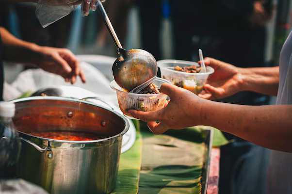
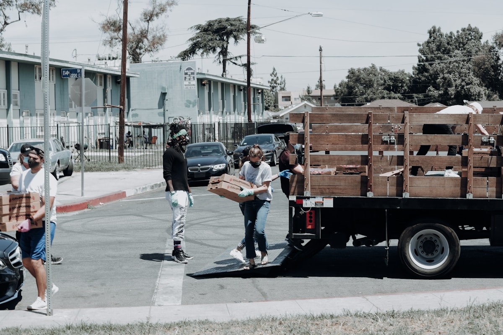
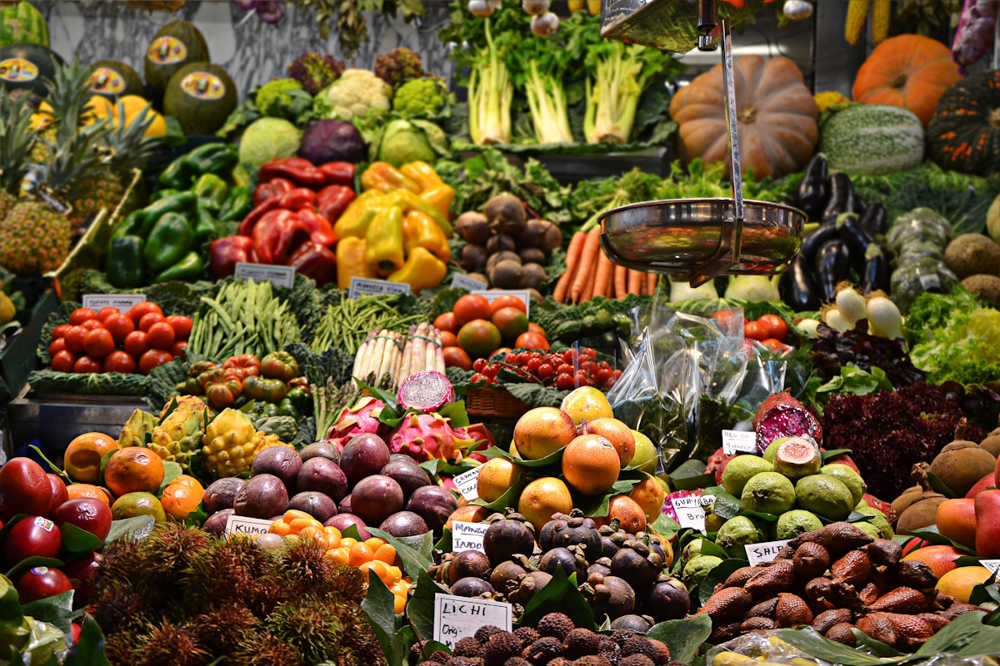

🍔
Donors Share
Restaurants, stores, and individuals list safe surplus food in a few simple details.
Good food deserves another plate.
RePlate brings restaurants, stores, NGOs, and neighbors together so surplus food reaches people instead of landfills.

Together, we can
feed more, waste less.
Give surplus a route beyond the bin.
Put fresh food where neighbors need it.
A practical habit with a wider impact.
How it works
Restaurants, stores, and individuals list safe surplus food in a few simple details.
Verified NGOs discover nearby donations and coordinate a timely collection.
Nutritious food reaches people who need it, strengthening our communities.
The impact
A donation does more than clear a shelf. It helps a local kitchen plan its next meal and keeps edible food out of the waste stream.
Local
connections
Daily
difference


Join the movement